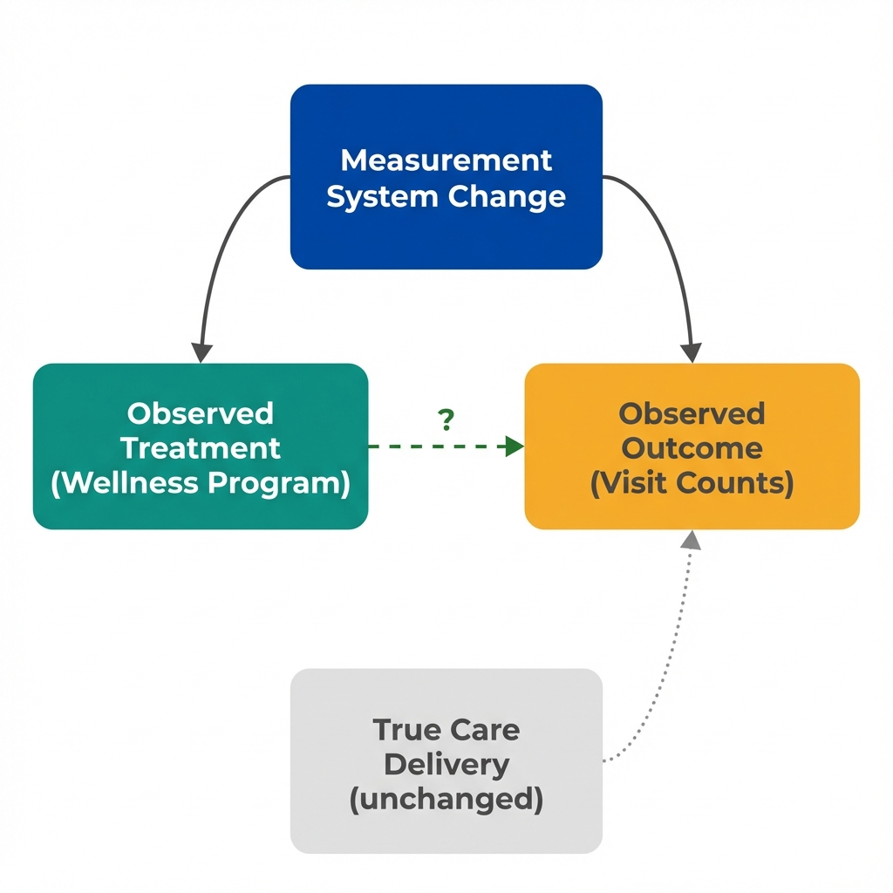

The Data
A county launched a Diabetes Wellness Program in January 2023. At the same time, all county clinics upgraded to a new electronic health record (EHR) system with better visit documentation. The chart shows diabetes care visits before and after the program launch. (Data are simulated for illustration.)
Diabetes Care Visits per 1,000 Enrollees
Next: If both counties show the same increase, what's really driving the change?
The Problem
When how we measure something changes at the same time as an intervention, we can mistake better measurement for real improvement. The new EHR system makes it easier to document visits, so visits that were previously recorded as general check-ups now get coded as diabetes care.
What Is an Instrumentation Threat?
An instrumentation threat occurs when the measurement tool or process changes between observations. The change in recorded values reflects the measurement system, not the phenomenon being measured.
- A scale that's recalibrated between weigh-ins
- Survey questions reworded between years
- Diagnostic criteria updated during a study
- Data entry procedures that become more thorough

The measurement system change affects what we observe, regardless of whether actual care changed.
Next: How can we tell if the increase is real or just better recording?
The Test
A comparison group that experienced the same measurement change but not the intervention reveals what the measurement change alone would produce. If both groups show similar increases, the measurement system is the likely cause.
Comparing the Two Counties
| County | Program? | New EHR? | Before | After | Change |
|---|---|---|---|---|---|
| County A | Yes | Yes | -- | -- | -- |
| County B | No | Yes | -- | -- | -- |
| Difference-in-Differences | -- | -- | -- | ||
How to Detect Instrumentation Threats
Ask these questions when evaluating any before-after comparison:
- Did anything change about how we count or record the outcome? New systems, updated definitions, or training changes all matter.
- Can we find a comparison group with the same measurement change? If they show the same "improvement," the measurement is likely the cause.
- Does the timing align with system changes? Sudden jumps that coincide with administrative changes are suspicious.
Next: What questions should we ask before trusting any before-after comparison?
Questions to Consider
These questions help identify instrumentation threats that statistical adjustment cannot fix. They won't prove causation, but they reveal where the analysis is most vulnerable to measurement artifacts.
What changed in how we measure?
Any change in data collection, coding systems, or definitions can create artificial trends. Even "improvements" in data quality can bias before-after comparisons.
Can we find a comparison group?
The ideal comparison experienced the same measurement change but not the program. If both groups show similar changes, the measurement system is the likely cause.
How sudden is the change?
Real program effects often build gradually. Sudden jumps that align perfectly with administrative changes suggest measurement artifacts.
What would null look like?
If the program had no effect, what would we expect to see? With an EHR change, we'd expect some increase even without a program.
Concepts Demonstrated in This Lab
Key Takeaway
When measurement systems change alongside programs, observed trends may be artifacts. Better documentation, updated coding systems, and refined definitions can all create the appearance of improvement where none exists. The solution isn't better statistical adjustment. Instead, find a comparison group that experienced the same measurement change but not the intervention. If both groups show similar changes, the ruler changed, not the thing being measured. This is what economists mean by "identification."